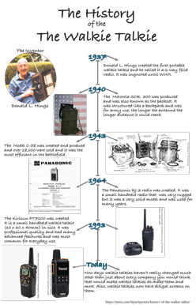

Cole Keister's AENG 110 Infographic Project |
||
| Home Bookmark Project Infographic Project Video Project | ||
|
 Infographic Expanded |
The purpose of the infographic project is to research a communication technology using a variety of sources to explore its origin, operating principle, uses, impacts, and potential future. The infographic will illustrate how the chosen technology fits into the communication technology model and clearly explain how it operates. |
|
|
© 2025 Cole Keister |
||